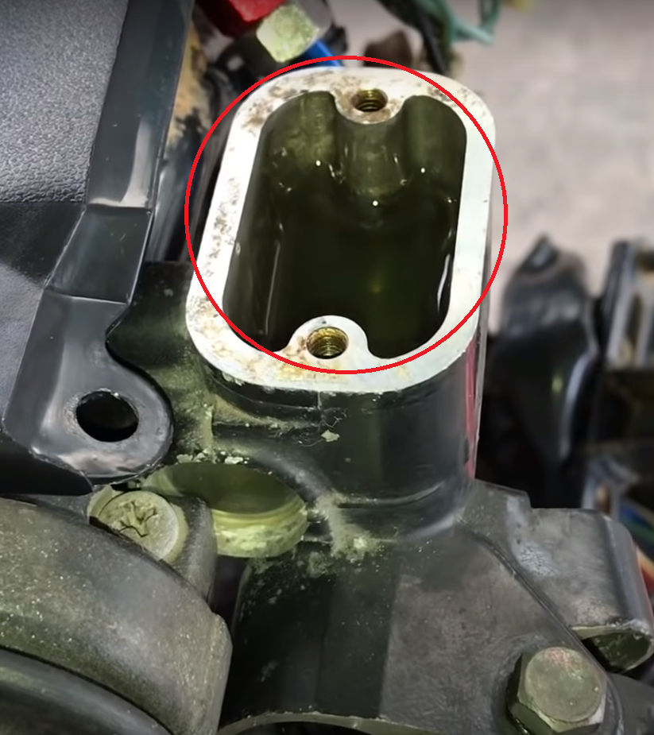

วิธีเปลี่ยนชุดซ่อมปั๊มเบรค
อาการเบรคหน้านำ้มันรั่ว เเข็ง กดไม่ลง กำเบรคเดี๋ยวมาเดี๋ยวหาย ผู้เขียนแนะนำให้ใช้ของแท้ที่มีมาตรฐานนะครับ เบรคหายไป1-2วินาทีนี่ตัดสินชีวิตคนขับได้เลยนะครับ อะไรไม่สมควรประหยัดอย่าประหยัดครับ
อุปกรณ์ที่ต้องใช้ ดังนี้
1.คีมถ่าง เลือกเบอร์ให้พอดีกับกิ๊บ
2.น้ำมันเบรค อธิบายเรื่องค่าDOTของน้ำมันควรเลือกใช้เท่าไหร่
3.น้ำเปล่า+น้ำยาล้างจาน ผงซักฝอก
4.กระดาษทรายเบอร์1000
ไล่ตามขั้นตอนเพื่อง่ายต่อการทำงาน และประหยัดเวลา
1.ถอดมือเบรคออก คลายฝากระปุกน้ำมันเบรค[เป็นหัว4แฉกตามภาพ] และน๊อตยึดสายเบรค[เบอร์12mm]

2.ถอดปั๊มเบรคออกมาจากตัวรถ และทำการแงะลูกยางและกิ๊บล็อคออก ลูกปั้มด้านในจะเด้งออกมาระวังอย่าให้ด้านในปั๊มเป็นรอย
3.เราจะได้ปั๊มที่ไร้ลูกสูบ ให้ทำการ ล้างให้สะอาดด้วยน้ำเปล่า+น้ำยาที่เราเตรียมไว้ รูที่วงไว้ล้างให้สะอาดอย่าให้มีรอยหรือเศษผงขยะ แล้วเป่าลมให้เเห้ง
4.ให้เรานำชุดลูกสูบ+สปริงใหม่ใส่เข้าไป เเล้วล็อคกิ๊บให้ลงล่อง ปิดลูกยางแล้วประกอบกลับเข้าที่ทุกอย่างยกเว้นฝาปิดปั๊มเบรค
.png)
5.เติมน้ำมันเบรคและเริ่มไล่อากาศ ให้ทำการกำเบรคเเละปล่อย กำ-ปล่อยๆ ให้อากาศที่อยู่ในปั๊มออกมาให้หมด อากาศจะเริ่มขึ้นมาตรงจุดที่ผู้เขียนวง [ระวังกระเด็นเข้าตาค่อยๆกำ] ไล่จนอากาศหมด กรณีไล่ไม่มาให้เราทำการคลายน๊อตยึดสายเบรค ดังนี้ กำเบรคค้างไว้ คลายน๊อตยึดสายเพื่อให้อากาศออก เเละขันเข้าเ ปล่อยเบรค ไล่ทำจนกว่าอากาศในปั๊มจะหมด